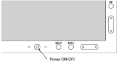
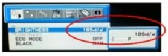

Setting up and calibrating the NEC LCD (P242w) monitor
Set up and calibrate the monitor for your system.
 |
|
1 LCD monitor setup and gamma setting
- Perform LOTO for the Global Operator Cabinet (GOC).
- Disconnect the DVI cable and the power cable from the LCD monitor and remove the LCD monitor from the operator workspace table.
- Remove the new LCD monitor from its box and its packing and set the LCD monitor on the operator workspace table.
- Connect the DVI-D and power cables to the LCD monitor.
Route these cables neatly to the back of the monitor base and the operator workspace.
note: For the DVI cable and power cable, reuse the cables originally connected to the LCD monitor.Figure 1. NEC LCD P242w cable connections

1 DisplayPort (For T5820 GOC) 2 DVI-D (For Other GOCs) 3 Power cable - Position the monitor no closer than 16 inches (41 cm) and no farther than 28 inches (71 cm) from the viewing position. The optimal distance is 24 inches (61 cm) for either of the monitors.
- Restore power to the GOC and boot up as normal.
- Make sure the main LCD monitor power is on.
If LCD power is not on, press the Power On/Off button on the front panel (see below).
Figure 2. NEC front power button

- Open Guided Install and select .
- Select LCD Monitor as the Display Type.
- Click [Configure]. Default gamma tables will be installed on the system.
- Select to close Guided Install.
Figure 3. System configuration panel - example

2 Calibrating the NEC monitor
- Reference the illustration and table below for information on control locations and functions.
Figure 4. Monitor components locations

- Set Picture Mode to FULL (4) using the following key entries:
- Menu
- Right arrow
- Right arrow
- Down arrow
- Left/Right arrow to set to FULL (4)
Figure 5. Setting Picture Mode to FULL

- Press [MENU] to exit.
- Set WHITE to 7500K .
Use the following key entries to access and change the value.
- Menu
- Right arrow
- Right arrow
- Down arrow
- Down arrow
- Left/Right arrow to set the value for your system.
Figure 6. Setting WHITE to 7500K

- Press [MENU] to exit.
- Set Brightness to 185 cd/m2 listed in the following table.
Use the following key entries to access and change the value.
- Menu
- Down arrow
- Left/Right arrow to set the value for your system.
Figure 7. Set brightness
